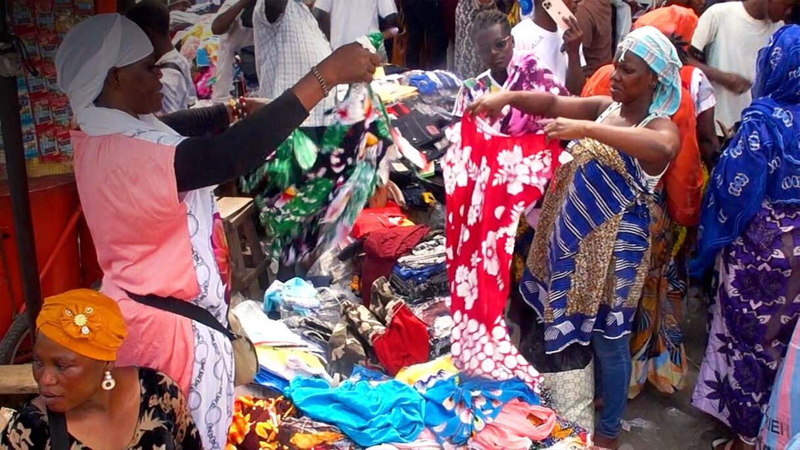

Explorer les marchés d'Adjamé
Découvrez les marchés emblématiques de la commune d'Adjamé à Abidjan, dont la célèbre gare routière Adjamé (véritable gare bus Adjamé Abidjan) et le forum des marchés Adjamé. Plongez dans la culture d'Adjamé Abidjan, ses traditions Adjamé Côte d'Ivoire et l'histoire de la commune Adjamé Abidjan. Cliquez sur un bouton pour lancer le guidage GPS vers le marché de votre choix.

Forum des marchés
Le plus grand marché d'Abidjan. Inauguré en 2001, il comprend plus de 13 000 emplacements répartis sur deux niveaux.
Ouvert : 6h00 - 18h30

Marché Gouro
Fondé par des femmes Gouro en 1972. Marché vivrier très fréquenté, modernisé avec plus de 2000 magasins prévus.
Ouvert : 6h00 - 18h30

Black Market (Shopping Abrogoua)
Centre de commerce électronique et vestimentaire avec plus de 400 boutiques près de la mosquée d'Adjamé.
Ouvert : 7h00 - 19h00

Marché Roxy
Marché dense et très actif, surtout connu pour ses vendeuses ambulantes. Haut lieu du commerce populaire.
Ouvert : 6h30 - 18h00

Marché Petit-Lomé
Ancien marché récemment ravagé par un incendie. Il fait l'objet d'une réinstallation progressive depuis 2024.
Ouvert : 7h00 - 17h00